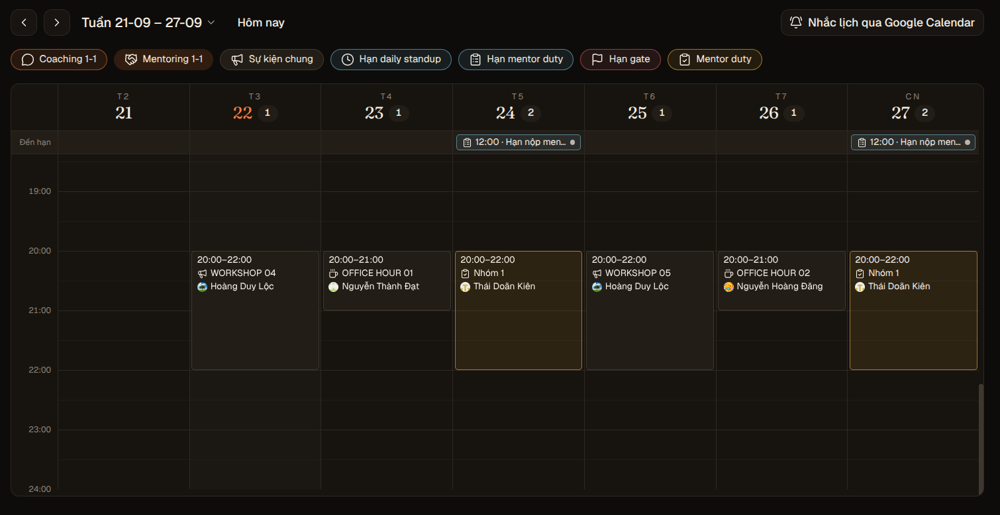
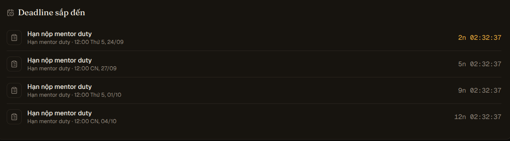
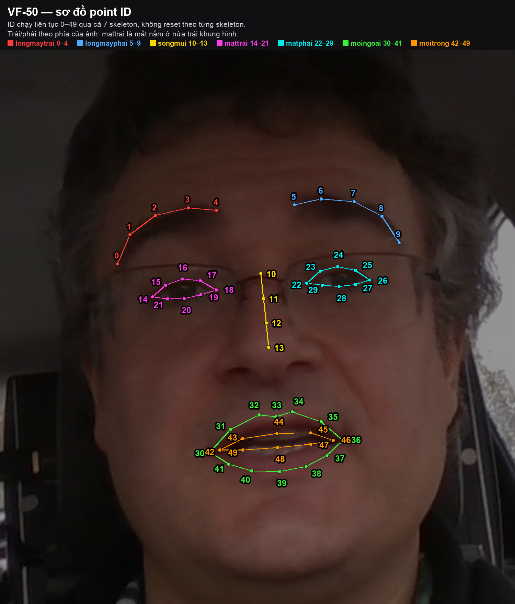
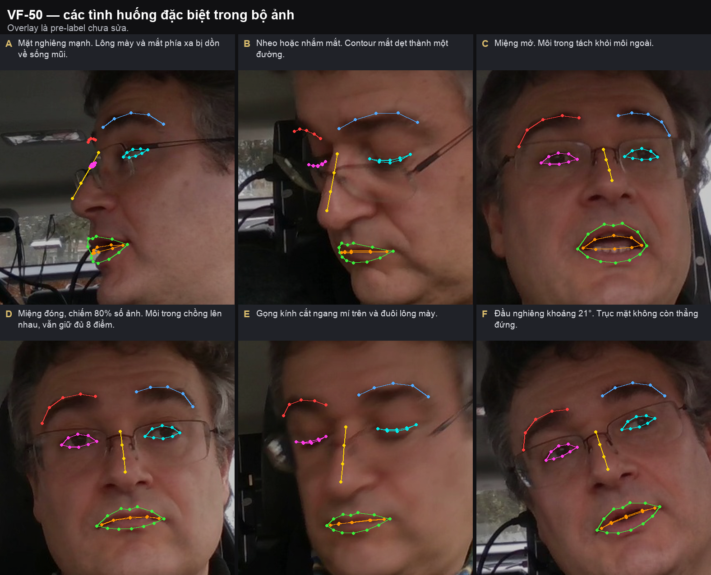
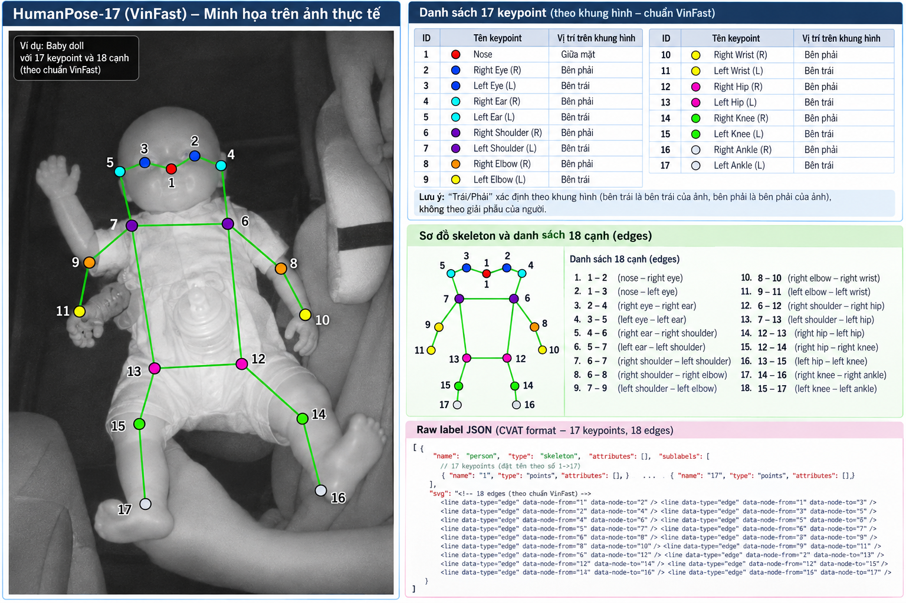
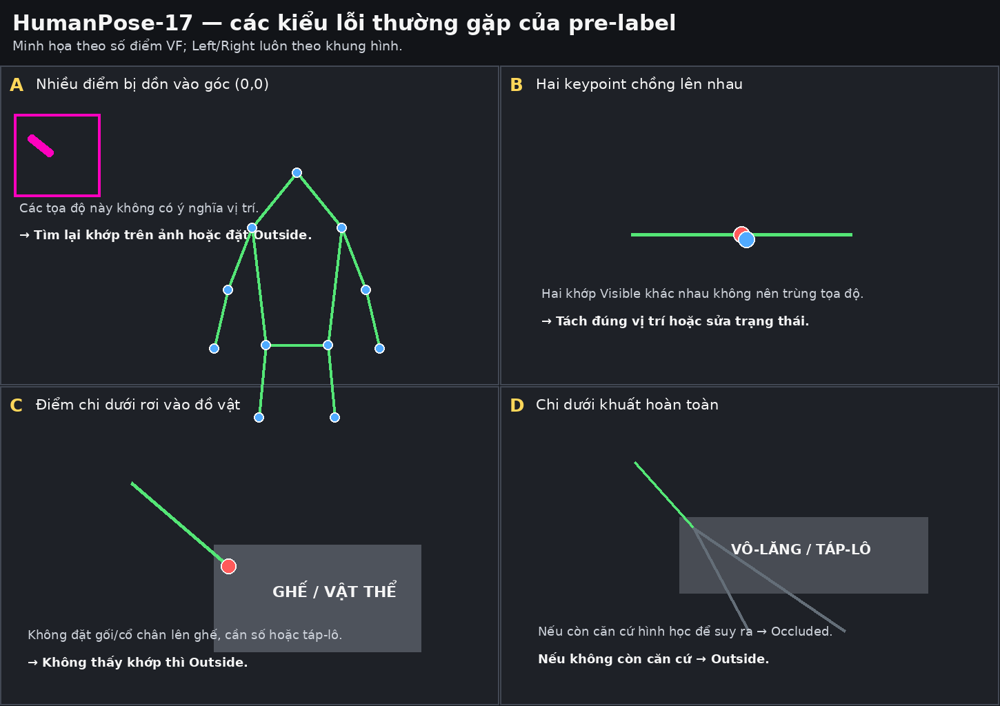

Xem hình ảnh
Hệ thống hóa toàn bộ thông tin triển khai thử thách Tuần 2 của Team T006 — Anyone's Legend: Phân bổ công việc, quy trình annotation 3 bước, lịch sự kiện & deadline báo cáo, cùng danh mục checkpoint kỹ thuật bám sát guideline Week 2.
| Task ID | Tên Task | Assignee Quản Lý Task | Subset | Quy mô Job | Tổng Frames | Tiến độ |
|---|---|---|---|---|---|---|
| Task #339 | W2-POSEPRE-G1-T1 (HumanPose With Pre-label) | 2A202602093 (Phạm Xuân Duy — Leader Phase) |
Input subset | 4 Jobs (#2194 - #2197) | 40 frames | 4 annotating • 4 total |
| Task #338 | W2-POSE-G1-T1 (HumanPose Without Pre-label) | 2A202602093 (Phạm Xuân Duy — Leader Phase) |
Input subset | 4 Jobs (#2190 - #2193) | 20 frames | 4 annotating • 4 total |
| Task #341 | --- (Task bổ sung / Face Landmark) | 2A202602336 (Nguyễn Như Quỳnh — Leader Phase) |
Input subset | 4 Jobs (#2198, #2202, ...) | 40 frames (18f active) | 4 annotating • 4 total |
| Job ID | Thuộc Task | Thành viên phụ trách | MSSV | Frame Range | Số frames | Thời lượng | Cập nhật gần nhất |
|---|---|---|---|---|---|---|---|
Job #2194 |
Task #339 | NGUYỄN ĐẠI HOÀNG | 2A202602208 |
0 – 9 | 10 frames (25%) | 10 hours | Sep 22, 10:01 |
Job #2195 |
Task #339 | THÂN VĨNH TRỌNG | 2A202602262 |
10 – 19 | 10 frames (25%) | 10 hours | Sep 22, 00:11 |
Job #2196 |
Task #339 | NGUYỄN NHƯ QUỲNH | 2A202602336 |
20 – 29 | 10 frames (25%) | 10 hours | Sep 22, 00:11 |
Job #2197 |
Task #339 | TRƯƠNG TRỌNG ĐỨC | 2A202602172 |
30 – 39 | 10 frames (25%) | 10 hours | Sep 22, 01:21 |
Job #2190 |
Task #338 | NGUYỄN ĐẠI HOÀNG | 2A202602208 |
0 – 4 | 5 frames (25%) | 10 hours | Sep 22, 10:01 |
Job #2191 |
Task #338 | THÂN VĨNH TRỌNG | 2A202602262 |
5 – 9 | 5 frames (25%) | 10 hours | Sep 22, 08:54 |
Job #2192 |
Task #338 | NGUYỄN NHƯ QUỲNH | 2A202602336 |
10 – 14 | 5 frames (25%) | 10 hours | Sep 22, 10:08 |
Job #2193 |
Task #338 | TRƯƠNG TRỌNG ĐỨC | 2A202602172 |
15 – 19 | 5 frames (25%) | 10 hours | Sep 22, 00:11 |
Job #2198 |
Task #341 | PHẠM XUÂN DUY | 2A202602093 |
— | 5 frames | In progress | Annotation in progress |
Job #2202 |
Task #341 | PHẠM XUÂN DUY | 2A202602093 |
— | 13 frames | In progress | Annotation in progress |
| TT | Họ và tên | MSSV | Số frames | Số labels | Thời lượng |
|---|---|---|---|---|---|
| 1 | NGUYỄN ĐẠI HOÀNG | 2A202602208 | 15 frames | 8 | 20 hours |
| 2 | THÂN VĨNH TRỌNG | 2A202602262 | 15 frames | 8 | 20 hours |
| 3 | TRƯƠNG TRỌNG ĐỨC | 2A202602172 | 15 frames | 8 | 20 hours |
| 4 | NGUYỄN NHƯ QUỲNH | 2A202602336 | 15 frames | 8 | 20 hours |
| 5 | PHẠM XUÂN DUY | 2A202602093 | 15 frames | 8 | 20 hours |
| # | Label Name | Loại đối tượng | Ghi chú |
|---|---|---|---|
| 1 | person | HumanPose-17 | 1 skeleton, 17 keypoints (VinFast Left/Right) |
| 2 | longmaytrai | Face Landmark | 5 points (0 – 4), contour hở |
| 3 | longmayphai | Face Landmark | 5 points (5 – 9), contour hở |
| 4 | songmui | Face Landmark | 4 points (10 – 13), contour hở |
| 5 | mattrai | Face Landmark | 8 points (14 – 21), contour kín |
| 6 | matphai | Face Landmark | 8 points (22 – 29), contour kín |
| 7 | moingoai | Face Landmark | 12 points (30 – 41), contour kín |
| 8 | moitrong | Face Landmark | 8 points (42 – 49), contour kín (dù miệng đóng) |
in progress để làm. Khi hoàn thành toàn bộ frame, chuyển State sang completed.
Validation và gán Assignee cho Validator (Reviewer).Annotation, State về rejected.Acceptance.
completed. Dữ liệu sẵn sàng để export nộp cho BTC và tính KPI đội.
plan_info.md. Với Job 40 frames có 1 frame máy đánh mẫu (pre-label) — bắt buộc phải kiểm tra lại so với guideline trước khi dùng, các frame còn lại tự đánh.
| STT | Nhiệm vụ báo cáo | Hạn nộp chính thức | Mục tiêu & Phiên giải đáp | Trạng thái |
|---|---|---|---|---|
| 1 | Báo cáo Mentor Duty — Đợt 1 | 12:00 (Trưa) Thứ 5, ngày 24/09 | Gom các ca khó/ambiguous cases giải đáp lúc 20:00 cùng ngày (Mentor Thái Doãn Kiên) | Tuần 2 - Giữa tuần |
| 2 | Nghiệm thu thử thách Tuần 2 | Thứ 7, ngày 26/09 | BTC nghiệm thu tiến độ và chất lượng bộ nhãn Tuần 2 của toàn đội | Nghiệm thu BTC |
| 3 | Báo cáo Mentor Duty — Đợt 2 | 12:00 (Trưa) Chủ Nhật, ngày 27/09 | Nghiệm thu ca khó tuần 2, chuẩn bị chuyển giao tuần 3 lúc 20:00 (Mentor Thái Doãn Kiên) | Tuần 2 - Cuối tuần |
| 4 | Báo cáo Mentor Duty — Đợt 3 | 12:00 (Trưa) Thứ 5, ngày 01/10 | Kế hoạch tuần 3 - Giữa tuần | Tuần 3 |
| 5 | Báo cáo Mentor Duty — Đợt 4 | 12:00 (Trưa) Chủ Nhật, ngày 04/10 | Kế hoạch tuần 3 - Cuối tuần | Tuần 3 |




